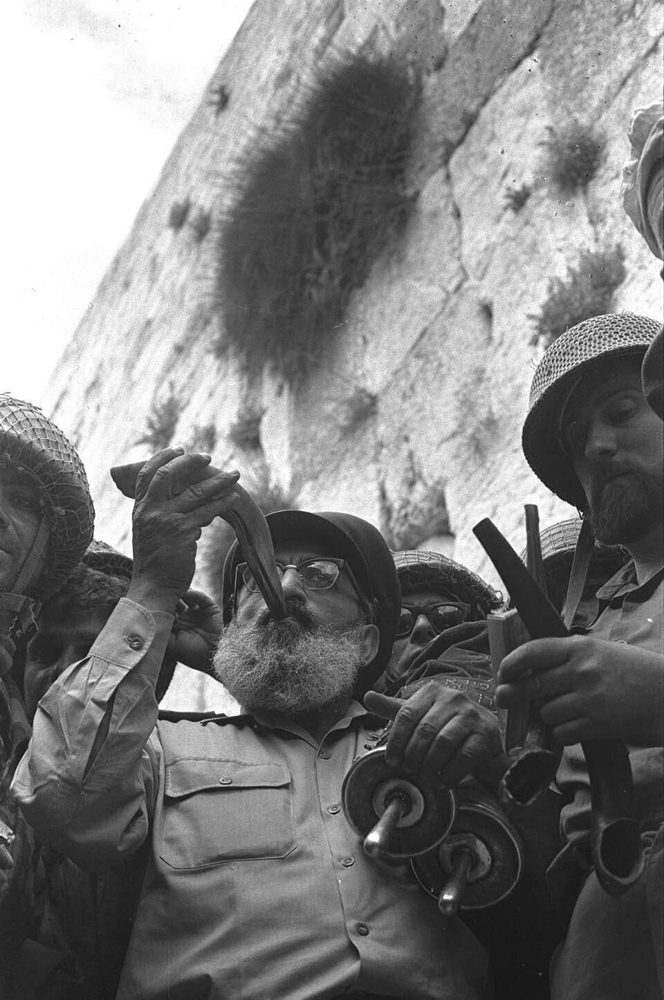

Core Workbook

Task: Fill in the blanks in the summary below using the correct words from the word bank.
The concept of ______________________ is best defined as a movement that emerged in the late 19th century advocating for the establishment of a jewish homeland in palestine.. The concept of ______________________ is best defined as hostility, prejudice, or discrimination directed against jewish people, a major driver of jewish migration to palestine.. The concept of ______________________ is best defined as a 1917 statement by the british government expressing support for the establishment of a 'national home for the jewish people' in palestine.. The concept of ______________________ is best defined as the league of nations mandate granted to britain in 1920 to administer palestine following the collapse of the ottoman empire.. The concept of ______________________ is best defined as a british policy paper that severely restricted jewish immigration and land purchases in palestine, angering the jewish community.. The concept of ______________________ is best defined as the main jewish paramilitary organization in mandatory palestine, which later formed the core of the israel defense forces (idf).
======================================================================================
SPECIFICATION STUDY MAP: KEY TOPIC 2.1
======================================================================================
1. Palestinian Nationalism ➔ Cairo Conference (1964), creation of the PLO and Fatah.
2. Border Wars & Skirmishes ➔ Disputes over Jordan water, Samu Raid (1966), 7 April 1967.
3. The Slide to War (May '67) ➔ Soviet misinformation, UNEF withdrawal, closure of Tiran.
4. The Six Day War ➔ June 5 pre-emptive strike, lightning land war, redrawn boundaries.
======================================================================================
The decade of relative border peace secured by the UN Emergency Force (UNEF) buffer began to disintegrate in the mid-1960s as a new wave of radical Palestinian nationalism swept the region. In January 1964, President Nasser hosted the historic Cairo Conference of the Arab League. At this summit, Arab leaders took the monumental step of establishing the Palestine Liberation Organisation (PLO). The primary objective of the PLO was to unite various Palestinian resistance groups under a single political umbrella to destroy the State of Israel and reclaim the lost homeland for the Palestinian refugees.
Q1. What was the primary objective of the Palestine Liberation Organisation (PLO) when it was established at the 1964 Cairo Conference?
[THE 1964 CAIRO CONFERENCE]
│
┌─────────────────────┴─────────────────────┐
▼ ▼
[Establishment of the PLO] [Dispute Over River Jordan]
- Goal: Unite resistance groups - Israel builds National Water Carrier
- Officially backed by Arab League - Arab states build diversion canals
- Emergence of Fatah as military force - Led to intense border tank/artillery battles
Alongside this diplomatic development, a radical guerrilla movement called Fatah (founded in 1959 by Yasser Arafat) began to dominate Palestinian military activity. Unlike older Arab politicians who relied on conventional state-to-state warfare, Fatah believed that only a grassroots, irregular guerrilla war could liberate Palestine. At the Cairo Conference, tensions also flared over a vital shared resource: water. Israel had completed its massive National Water Carrier engineering project to divert fresh water from the Sea of Galilee south to irrigate the Negev Desert. Viewing this as an act of aggression, Arab leaders at the conference agreed to divert the headwaters of the River Jordan (specifically the Dan and Banias rivers) inside Syria and Lebanon to starve Israel of water.
Q2. How did the dispute over the River Jordan escalate tensions between Israel and the Arab states in the mid-1960s?
By 1965, this dispute erupted into an active border war. Whenever Syrian workers began building diversion canals, Israeli tanks and artillery fired across the border to destroy their heavy machinery, driving Syria and Israel into a cycle of violent border clashes. By 1966, the border between Israel and its Arab neighbours had become a volatile combat zone. This escalation was fueled primarily by a radical, left-wing military coup in Syria in February 1966.
The new Syrian government adopted a fiercely aggressive posture toward Israel. They began actively sponsoring Fatah, providing Palestinian guerrilla fighters with funds, modern explosives, and training bases inside Syrian territory. From these bases, Fatah launched a relentless campaign of cross-border sabotage raids into Israel. Rather than attacking the Syrian military directly, Israel's retaliatory strikes focused on the countries from which Fatah fighters infiltrated, pushing relations to the breaking point:
Q3. How did the new Syrian government support the Fatah guerrilla movement from 1966 onwards?
[Syria funds/arms Fatah guerrillas] ➔ [Fatah launches sabotage raids into Israel]
│
[IDF launches massive reprisal on Jordanian Samu] ➔ [King Hussein is deeply alienated]
The Samu Raid (November 1966): After a Fatah landmine killed three Israeli border policemen, Prime Minister Levi Eshkol ordered a massive reprisal raid into Jordan, which controlled the West Bank. On 13 November 1966, 600 IDF troops backed by tanks swept into the Jordanian village of Samu, dynamiting dozens of homes and clashing with the Jordanian military, leaving 15 Jordanian soldiers dead. The raid deeply embarrassed King Hussein of Jordan, who publicly accused President Nasser of hiding behind UN peacekeepers instead of helping defend his Arab allies. The Air Clash of 7 April 1967: Skirmishes on the Syrian border erupted into full-scale combat when Syrian artillery on the Golan Heights began bombarding Israeli tractors farming in the demilitarised zone. The Israeli air force responded aggressively. In a dramatic aerial dogfight over Damascus, Israeli fighter jets shot down six Syrian Soviet-built MiG-21 jets in a single afternoon. This humiliating defeat left the Syrian leadership desperate to find a way to restore their military honor.
Q4. What was the outcome of the April 1967 air clash over Damascus, and how did it affect the Syrian leadership?
======================================================================================
THE MAY 1967 CASCADE: CHRONOLOGY OF CRISIS
======================================================================================
13 May ➔ Soviet Misinformation: USSR falsely tells Nasser Israel is massing troops on Syria.
15 May ➔ Egyptian Mobilization: Nasser puts army on alert, moves troops into Sinai.
16 May ➔ UN Out: Nasser orders UN peacekeepers (UNEF) to evacuate the border buffer.
23 May ➔ Maritime Blockade: Egypt closes the Straits of Tiran, choking Israel's port of Eilat.
30 May ➔ Encirclement: King Hussein of Jordan signs a joint defence pact with Egypt.
======================================================================================
The humilation of the April air clash set off a rapid chain reaction in May 1967 that made a major regional war virtually inevitable. The Catalyst: Soviet Misinformation (13 May). The Soviet Union intervened by issuing a formal, highly urgent warning to President Nasser, claiming that Israel was massing ten brigades on the Syrian border for a full-scale invasion. This report was completely false—UN observers on the ground confirmed there was no Israeli troop build-up—but it placed Nasser under immense pressure to act.
Q5. How did the Soviet Union's misinformation in May 1967 act as a catalyst for the crisis?
Nasser’s Gamble: Accused of cowardice by Jordan and Syria, Nasser decided he had to demonstrate his leadership of the Arab world. On 15 May, he placed the Egyptian army on high alert and marched his troops across the Suez Canal into the Sinai Desert. On 16 May, he ordered the UNEF commander to immediately withdraw all UN peacekeepers from the Sinai border, leaving the Egyptian and Israeli armies standing face-to-face. Closing the Straits of Tiran (23 May): In his most dangerous move, Nasser ordered Egyptian troops to reoccupy Sharm el-Sheikh and closed the Straits of Tiran to all Israeli shipping. Israel had repeatedly declared that closing the Straits would be considered a formal casus belli (an act of war), as it choked off its oil imports and trade through Eilat.
Q6. Identify two dangerous gambles President Nasser took between 15 May and 23 May 1967.
The Jordan-Egypt Defence Pact (30 May): To Israel’s horror, King Hussein of Jordan flew to Cairo and signed a mutual defence treaty with Nasser, placing the Jordanian army under the command of an Egyptian general. Israel now faced a fully coordinated military encirclement on three fronts by armies openly calling for its destruction. Believing an Arab invasion was imminent, the newly formed Israeli National Unity Government—including war hero Moshe Dayan as Defense Minister—decided to launch a pre-emptive strike to secure its survival.
The Air War: Operation Focus (5 June 1967). On the morning of 5 June 1967, Israel launched Operation Focus, the most successful pre-emptive air strike in modern military history. At 7:45 AM, nearly the entire Israeli air force flew low over the Mediterranean Sea to evade Egyptian radar, catching the Egyptian air force completely by surprise as they ate breakfast. Within three hours, Israeli jets bombed the runways and destroyed 309 of Egypt's 340 combat aircraft while they were still parked on the tarmac.
Q7. Describe the success of Operation Focus launched by the Israeli air force on 5 June 1967.
Later that day, when Syria, Jordan, and Iraq entered the war, Israel turned its jets on their airfields, destroying their air forces as well. By the end of day one, Israel had secured absolute air superiority, guaranteeing its ground forces total protection and leaving Arab infantry completely exposed to aerial attack.
[OPERATION FOCUS: 5 JUNE 1967]
│
[Low-altitude surprise air strike] ➔ [Egyptian radar successfully bypassed]
│
[Bomb runways & destroy 309 Egyptian jets] ➔ [Total Israeli air superiority secured]
The Land War: The Lightning Conquests. With the skies secured, the IDF launched a highly coordinated, three-front blitzkrieg that redrew the map of the Middle East in just six days. The Southern Front (Egypt): Israeli tank divisions led by General Ariel Sharon raced across the Sinai Desert, routing the Egyptian forces and advancing all the way to the east bank of the Suez Canal, capturing the entire Sinai Peninsula and the Gaza Strip.
Q8. What were the key territorial conquests of the Israeli Defence Forces during the land war?
The Eastern Front (Jordan): After Jordan began shelling West Jerusalem, Israeli forces launched a fierce counter-offensive. They captured the entire West Bank and, in a deeply emotional victory, took control of the Old City of East Jerusalem, reuniting the city under Jewish control for the first time in 2,000 years. The Northern Front (Syria): On 9 June, Israeli forces turned north and scaled the steep cliffs of the Golan Heights under heavy Syrian fire, capturing the strategic plateau and putting the Syrian capital of Damascus within range of Israeli artillery.
By the time a United Nations ceasefire took effect on 10 June 1967, the war was over. Israel had achieved a miraculous victory, defeating three major Arab armies and expanding its territory to three times its pre-war size.
| Captured Territory | Captured From | Strategic Value |
|---|---|---|
| Sinai Peninsula | Egypt | Vast desert buffer zone |
| Gaza Strip | Egypt | Eliminated Fedayeen bases |
| West Bank | Jordan | Defensible borders (Jordan) |
| East Jerusalem | Jordan | Holy Sites (Western Wall) |
| Golan Heights | Syria | Protected Galilee farming |
Q9. Write a narrative account analysing the key events of the May 1967 crisis that led to the outbreak of the Six Day War. (8 marks)
Task: Read the key terms and their definitions. Choose two terms and write a single, historically accurate sentence that connects them.
The lightning ending of the Six Day War left the Middle East in a deep diplomatic deadlock. On 22 November 1967, the United Nations Security Council unanimously adopted Resolution 242. This resolution was designed to establish the guiding principles for a "just and lasting peace" in the region, introducing the fundamental "land for peace" formula. Resolution 242 stressed the "inadmissibility of the acquisition of territory by war" and called for: 1. The withdrawal of Israeli armed forces from territories occupied in the conflict. 2. The termination of all states of belligerency, and respect for the right of every state in the area to live in peace within secure and recognized borders. 3. A just settlement of the refugee problem.
[UN RESOLUTION 242 (NOV 1967)]
|
+-------------------------+-------------------------+
v v
[English Wording: Loophole] [French Wording: Strict]
- "Withdrawal from territories" - "des territoires occupés"
- Israel argued it did NOT mean ALL - Interpreted as requiring a
territories; allowed border expansion complete withdrawal to 1967 lines
However, the resolution's deliberate ambiguity created long-term loopholes that both sides exploited. The English text called for withdrawal from "territories occupied," omitting the definite article 'the'. Israel’s government argued this meant they were not required to withdraw from all the occupied land, but rather from some territories, to ensure "secure and recognized" borders. Conversely, the equally official French version translated the phrase as "des territoires occupés" (from the territories), which the Arab states interpreted as a mandate for a complete Israeli return to the pre-war boundaries. The PLO immediately rejected Resolution 242 because it referred to the Palestinians merely as a "refugee problem" rather than as a nation with a legitimate right to self-determination and statehood.
Q1. How did Israel and the Arab states interpret the ambiguous wording of UN Resolution 242 differently?
The Arab states responded defiantly at the Arab League Summit in Khartoum in August 1967. They issued the famous "Three Nos" of Khartoum: No peace with Israel, No recognition of Israel, and No negotiations with Israel. This diplomatic deadlock meant the Suez Canal—which Egypt had blocked at the start of the war—remained closed. The canal became a heavily fortified military front line separating the Egyptian army on the west bank from the IDF on the east bank, leading directly to the War of Attrition (1969–1970). The Six Day War triggered a second massive wave of Palestinian displacement. Approximately 300,000 Palestinian Arabs fled the West Bank and Gaza Strip during the fighting, with many being forced to flee for a second time from existing refugee camps.
Q2. What was the defiant response of the Arab states at the August 1967 Arab League Summit in Khartoum?
The vast majority crossed the River Jordan, putting immense economic strain on Jordan. This left over 1.5 million Palestinians living under military occupation or in crowded, temporary UNRWA camps.
[THE STRATEGIC OCCUPIED Buffer ZONES]
|
+---------------------------+---------------------------+
v v v
[The Golan Heights] [The Sinai Peninsula] [The West Bank & Gaza]
- Prevented Syrian shelling - Kept Egyptian artillery - Created defensible borders
of Galilee farming far from Israeli cities - Blocked cross-border raids
For Israel's security, the captured territories held immense strategic and military significance. The territories acted as vast physical buffers. The Sinai Desert kept Egyptian artillery far from Israel's borders, the West Bank created a defensible border along the River Jordan, and the Golan Heights prevented Syria from shelling Israeli farming villages in Galilee. The Golan Heights also provided vital water sources, while the Sinai Peninsula offered oil fields in the Gulf of Suez. Israel immediately annexed East Jerusalem, declaring the unified city its eternal capital.
Q3. Explain the strategic significance of the captured territories for Israel's military security.
However, the occupation quickly became a source of deep political and demographic division. In September 1967, Israel established its first Jewish settlement in Gush Etzion on the West Bank. Under both Labor and Likud governments, Israel promoted a policy of building Jewish settlements in the occupied territories, offering financial subsidies and tax breaks to settlers. By the late 1980s, the number of settlers rose to over 200,000, creating permanent "facts on the ground" that fragmented Palestinian society, restricted movement through military checkpoints, and deeply alienated the local Arab population. The total military defeat of conventional Arab armies in 1967 convinced Palestinian nationalists that they could not rely on Arab states to liberate their homeland. Under Yasser Arafat's leadership, the PLO shifted toward guerrilla warfare and irregular tactics.
Q4. How did the Israeli policy of building Jewish settlements in the occupied territories impact the local Arab population?
Simultaneously, more radical, Marxist splinter groups emerged, most notably the Popular Front for the Liberation of Palestine (PFLP), founded by George Habash.
Conventional Arab Armies Defeated (1967) -> Grassroots Nationalist Awakening
|
Radical Splinter Groups Form (e.g., PFLP) -> Strategy of "Internationalized" Terror
|
Dawson's Field Hijackings (1970) -> World Spotlight Forced onto Palestinian Issue
To force the Palestinian issue onto the international diplomatic stage, the PFLP pioneered international aviation terrorism. On 6 September 1970, PFLP militants hijacked four international commercial airliners bound for New York and forced three of them to land at Dawson's Field, a remote desert airstrip near Zarka in Jordan. After evacuating the passengers, the hijackers blew up the multi-million-dollar aircraft in front of the world's media. This dramatic event succeeded in grabbing global attention, but it also deeply embarrassed Jordan's King Hussein, whose sovereignty had been publicly undermined.
Q5. Why did the Popular Front for the Liberation of Palestine (PFLP) hijack commercial airliners to Dawson's Field in 1970?
By 1970, the PLO had established a virtual "state-within-a-state" inside Jordan, collecting its own taxes, running checkpoints, and launching unauthorized rocket attacks on Israel, which drew destructive Israeli military reprisals onto Jordanian territory. The Dawson's Field hijackings were the final straw for King Hussein. He realized that the PLO threatened to overthrow his Hashemite monarchy and plunge Jordan into a civil war.
Q6. Why did King Hussein of Jordan view the PLO as a threat to his sovereignty by 1970?
[THE BLACK SEPTEMBER CIVIL WAR]
|
[PLO "State-within-a-State" in Jordan] -> [King Hussein's Sovereignty Undermined]
|
[Dawson's Field Hijackings (1970)] -> [Jordanian Army Launches All-Out Attack]
|
[PLO Defeated & Expelled] -> [PLO Re-establishes HQ in Southern Lebanon]
On 17 September 1970, King Hussein declared martial law and ordered his elite, British-trained army to launch an all-out military offensive against PLO bases in Amman and northern Jordan. This brutal, ten-day civil war became known as "Black September". The Jordanian army used heavy artillery and tanks in crowded refugee camps, crushing the PLO forces.
Q7. What was the outcome of the 'Black September' civil war in Jordan in 1970?
Defeated and politically isolated, Yasser Arafat and thousands of PLO fighters were forcibly expelled from Jordan. They relocated their central headquarters to Lebanon, establishing a new base of operations in southern Lebanon (known as "Fatahland") and Beirut, which destabilized Lebanon's delicate political balance. In the wake of their defeat in Jordan, a radical, highly secretive PLO splinter group calling itself "Black September" was formed to conduct covert operations against Israeli and Western targets. Their most notorious attack occurred during the Munich Olympic Games in September 1972.
[Black September Infiltrates Olympic Village] -> [11 Israeli Athletes Taken Hostage]
|
[Failed German Rescue Attempt at Airport] -> [All Hostages & 5 Terrorists Killed]
|
[Worldwide TV Broadcast: Severe Condemnation] -> [Israel Launches Operation Wrath of God]
On 5 September 1972, eight heavily armed Black September terrorists scaled the fence of the Olympic Village in Munich, killing two members of the Israeli Olympic team and taking nine others hostage. The terrorists demanded the release of 234 Palestinian prisoners held in Israeli jails. During a botched rescue attempt by West German police at the Fürstenfeldbruck military airfield, the terrorists detonated a grenade inside a helicopter containing the bound hostages. In total, 11 Israeli athletes, five terrorists, and one German police officer were killed. The massacre unfolded on live television, shocking a global audience of hundreds of millions. It drew severe international condemnation of Palestinian terrorism, but it also succeeded in giving the Palestinian cause unprecedented public visibility.
Q8. Describe the events and consequences of the 1972 Munich Olympic Games terrorist attack.
In response, Israeli Prime Minister Golda Meir ordered the IDF to launch heavy bombing raids against PLO camps in Lebanon and Syria. More significantly, she authorized the Mossad to launch "Operation Wrath of God"—a highly secretive, global assassination campaign that hunted down and killed the key planners of the Munich massacre across Europe and the Middle East.
Q9. Write a narrative account analysing the key developments in the Palestinian issue in the years 1970–72. (8 marks)
Task: Complete the Frayer Models for the key concepts below. Write the definition, one historical example, and one non-example (or a sketch).
| Definition: The 'Catastrophe'; the Arabic term for the 1948 Palestinian exodus, where over 700,000 Palestinian Arabs fled or were expelled from their homes. |
Historical Example: |
| Characteristics: | Non-example / Sketch: |
| Definition: The Israel Defense Forces, officially formed in May 1948 by integrating various Jewish paramilitary groups into a single national army. |
Historical Example: |
| Characteristics: | Non-example / Sketch: |
The immediate aftermath of the 1967 war did not bring peace, but rather a grueling, undeclared border war along the Suez Canal known as the War of Attrition (1969–1970). Egyptian President Gamal Abdel Nasser refused to accept the static Israeli occupation of the Sinai Peninsula. Backed by massive military aid from the Soviet Union, Nasser launched a continuous campaign of heavy artillery shelling, commando raids, and rocket barrages across the Suez Canal to wear down the Israeli Defence Forces (IDF) and make the occupation too costly to sustain.
[THE COLD WAR ESCALATION ON THE SUEZ]
|
[Nasser launches artillery bombardments] -> [Israel retaliates with deep air strikes]
|
[Egypt receives 15,000 Soviet advisors] -> [Soviet SAM-3 missile sites built (1970)]
|
[US mediates August 1970 Ceasefire] -> [Uneasy stalemate remains unaddressed]
Israel responded aggressively by utilizing its absolute air superiority to conduct deep-penetration bombing raids into Egypt, targeting Egyptian military garrisons, industrial factories, and infrastructure along the Nile. To protect his regime, Nasser turned directly to his Soviet patrons. By 1970, approximately 15,000 Soviet military advisers were stationed in Egypt. Soviet pilots actively flew combat missions, engaging Israeli jets in dogfights over the canal, while Soviet engineers constructed advanced SAM-3 surface-to-air missile bases along the Suez front.
Q1. How did Israel respond to Nasser's artillery bombardments during the War of Attrition, and what was Nasser's reaction?
Alarmed that this direct superpower clash could drag the United States and the USSR into a global conflict, US Secretary of State William Rogers intervened. In August 1970, he successfully brokered a ceasefire that halted the active fighting. However, neither Egypt nor Israel was committed to substantive peace talks. Shortly after, on 28 September 1970, the strain of regional politics took its toll when Nasser suffered a sudden, fatal heart attack. His death shocked the Arab world. Five million mourners flooded the streets of Cairo for his funeral, marking the end of the charismatic era of Pan-Arabism.
Nasser was succeeded by his relatively unknown and underestimated Vice President, Anwar Sadat. Sadat inherited a country on the brink of political and economic collapse. Egypt's economy was severely damaged by the continuous military mobilization, the Suez Canal was closed (depriving Egypt of vital transit toll revenues), and millions of displaced civilians had fled the devastated cities along the canal zone. Sadat realized that to rebuild Egypt’s economy and send home his one million mobilized soldiers, he desperately needed to secure the return of the Sinai Peninsula and reopen the Suez Canal.
Q2. Why did Anwar Sadat believe he desperately needed to secure the return of the Sinai Peninsula?
[SADAT'S DIPLOMATIC ATTEMPTS (1971-72)]
|
+---------------------------+---------------------------+
v v
[The Golda Meir Proposal] [Expelling the Soviets]
- Sadat offers peace in return - Sadat expels 15,000 Soviet advisors
for the complete return of Sinai - Aim: Please USA and force them
- Rejected by Golda Meir - Result: Met with complete US indifference
Between 1970 and 1972, Sadat pursued two distinct diplomatic tracks: The "Peace for Sinai" Offer and Expelling the Soviet Advisers. Sadat approached Israeli Prime Minister Golda Meir with a bold proposal based on UN Resolution 242. He offered a formal peace agreement and the reopening of the Suez Canal in exchange for Israel returning the Sinai Peninsula. Confident in their military superiority, Golda Meir and her cabinet rejected the offer, refusing to return to the vulnerable pre-1967 borders.
Q3. What was the 'Peace for Sinai' offer proposed by Anwar Sadat, and why did Golda Meir reject it?
Frustrated by Soviet reluctance to supply him with offensive weapons and hoping to win diplomatic favor with the United States, Sadat took the dramatic step of expelling 15,000 Soviet advisers from Egypt in July 1972. He calculated that this anti-communist move would prompt the US to pressure Israel into territorial concessions. However, the Nixon administration was preoccupied with the Vietnam War and met Sadat's gesture with total indifference. By late 1972, Sadat's popularity had plummeted to its lowest point. The Egyptian public mocked him, the economy was stagnant, and the Sinai remained firmly in Israeli hands. Sadat realized that Israel would never negotiate as long as it felt militarily secure. He concluded that Egypt's only option was to launch a limited, surprise military strike to shatter the myth of Israeli invincibility and force the global superpowers to intervene and broker a diplomatic solution.
Q4. Why did Sadat expel 15,000 Soviet advisers from Egypt in July 1972, and what was the US reaction?
While Egypt struggled with stagnation, Israel utilized the years between 1967 and 1973 to consolidate its firm military and political control over the Occupied Territories (the Sinai, Gaza, West Bank, Golan Heights, and East Jerusalem). Israel's policy transitioned from a temporary military occupation to a permanent program of state-sponsored colonization.
[ISRAELI SETTLEMENT POLICY]
|
+-------------------------+-------------------------+
v v
[Labor Government: Security] [Likud/Gush Emunim: Biblical]
- Guided by the "Allon Plan" - Claimed divine right to Eretz Israel
- Built settlements as defensive - Aimed to block any future
barriers along borders - Palestinian statehood
Along the east bank of the Suez Canal, Israel constructed a massive military fortification. The Bar Lev Line consisted of a towering, 20-meter-high artificial sand wall backed by concrete bunkers, artillery emplacements, and early-warning systems designed to make any Egyptian crossing of the canal impossible. Israel began constructing permanent civilian communities (settlements) in the captured lands. The ruling Labor coalition focused on establishing defensive settlements in strategic buffer zones, such as the Jordan Valley. However, religious-nationalist groups like Gush Emunim began establishing unauthorized, radical settlements deep in the biblical lands of the West Bank.
Q5. What was the Bar Lev Line, and what was its purpose?
By 1973, these settlements had become permanent "facts on the ground," deeply fragmenting Palestinian society and convincing Arab leaders that Israel was expanding permanently. On 6 October 1973, Sadat’s secret plan for war was put into action. Egypt and its ally, Syria, launched a highly coordinated, two-front surprise attack against Israel.
Surprise Attack launched on Yom Kippur -> IDF caught off-guard; mobilization slowed
|
Egyptians breach the Bar Lev Line -> Syrian tanks overrun the Golan Heights
|
IDF suffers heavy initial losses -> Superpower arms airlifts begin (15 Oct)
The offensive was launched on Yom Kippur, the holiest day in the Jewish calendar. On this day, Israel was at a complete standstill: radio stations were silent, shops were closed, public transport was shut down, and most soldiers were at home fasting. This severely delayed the mobilization of the IDF’s reserve forces. Egyptian forces crossed the Suez Canal and used high-pressure water hoses pumped from the canal to rapidly wash away and breach Israel's formidable sand-wall defenses at the Bar Lev Line. Within hours, thousands of Egyptian infantry and tanks poured into Sinai, utilizing advanced Soviet-supplied anti-tank (Sagger) and anti-aircraft (SAM) missiles to destroy Israeli counter-attacks.
Q6. How did the Egyptian army successfully breach the Bar Lev Line at the start of the Yom Kippur War?
Simultaneously, Syrian tank divisions launched a massive assault across the Golan Heights, overrunning Israel's thin border defenses and threatening to break through into the Galilee. Caught completely off-guard, Israel suffered catastrophic initial casualties. For the first three days, the survival of the state hung in the balance. By 10 October 1973, Israeli reserves were fully mobilized, and the tide of the war began to turn through ruthless military execution and vital international assistance. On the Northern Front, the IDF successfully halted the Syrian advance and pushed Syrian forces back beyond the 1967 border.
On the Southern Front, the conflict escalated into a massive superpower proxy war. To replace Israel’s heavy losses, US President Richard Nixon authorized Operation Nickel Grass on 12 October—a massive, direct military airlift of advanced American weapons, tanks, and ammunition that arrived in Israel on 15 October. Simultaneously, the Soviet Union launched an equally massive arms resupply to Egypt and Syria. Utilizing their newly arrived equipment, Israeli tank divisions led by General Ariel Sharon exploited a gap between Egypt's Second and Third Armies. The IDF crossed the Suez Canal onto the Egyptian mainland, destroying Soviet-bloc SAM missile sites and completely encircling Egypt's Third Army in the Sinai Desert.
Q7. Describe the superpower proxy conflict that emerged during the Yom Kippur War.
[THE SUPERPOWER GEOPOLITICAL FACE-OFF]
|
+---------------------------+---------------------------+
v v v
[The US Weapons Airlift] [Soviet Intervention Threat] [The Arab OPEC Oil Embargo]
- Nixon sends tanks/jets - Brezhnev threatens troops - OPEC quadruples oil prices
- Stabilizes IDF defenses - US goes to DEFCON 3 alert - Chokes Western economies
As the Egyptian Third Army faced complete destruction, the Soviet Union threatened to intervene directly by deploying Soviet troops to Egypt. To deter the Soviets, the United States put its military forces on a high-alert status (DEFCON 3), bringing the world to the brink of a nuclear confrontation. To resolve the crisis, the UN Security Council passed Resolution 338 on 22 October, calling for an immediate ceasefire. To force the United States to restrain Israel, the Arab members of OPEC unleashed the "Oil Weapon." They placed a total oil embargo on the US and Western nations that supported Israel, cutting production and quadrupling oil prices from $3 to $12 a barrel.
Q8. How did the Arab members of OPEC attempt to force the United States to restrain Israel?
Choked by a severe global energy crisis and fuel shortages, President Nixon pressured Israel into accepting a permanent ceasefire on 25 October 1973.
+------------------------------------------------------------------------------------+ | THE SIGNIFICANCE OF THE YOM KIPPUR WAR | +--------------------------+---------------------------+-----------------------------+ | For Egypt | For Israel | For the Peace Road | +--------------------------+---------------------------+-----------------------------+ | Sadat restored Egyptian | Golda Meir and Moshe | Proved military force had | | honor and proved the | Dayan resigned due to | limits; forced US into | | Bar Lev Line was not | immense public anger over | exhaustive "shuttle | | invincible. | initial war failures | diplomacy". | +--------------------------+---------------------------+-----------------------------+
Q9. Write a narrative account analysing the key developments of the Yom Kippur War (1973) and its aftermath. (8 marks)